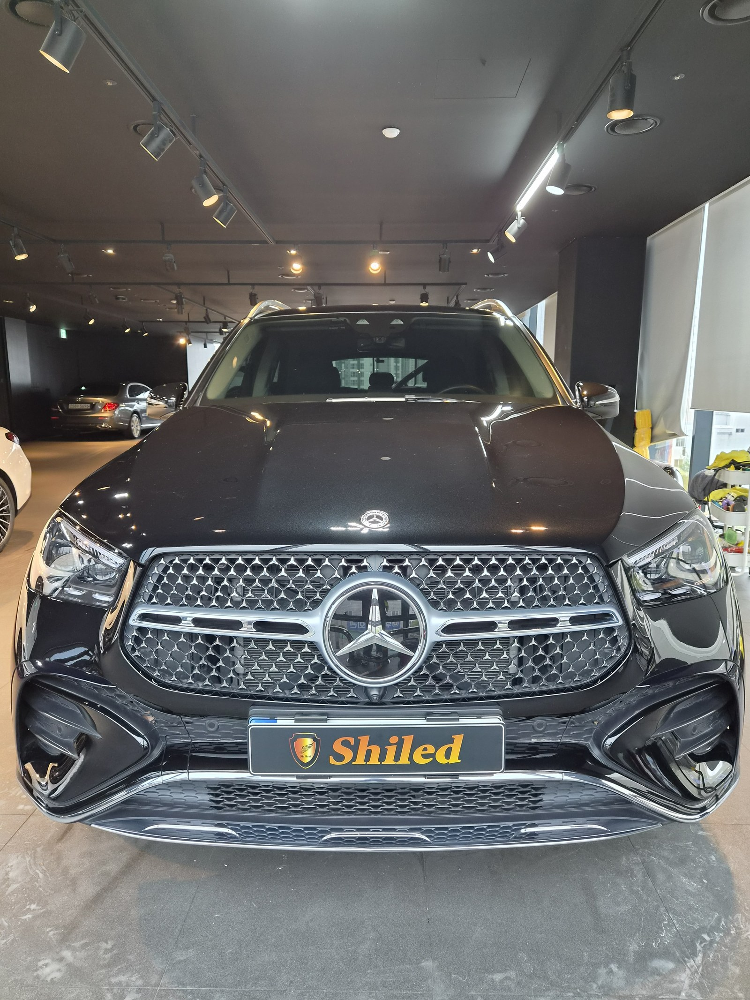
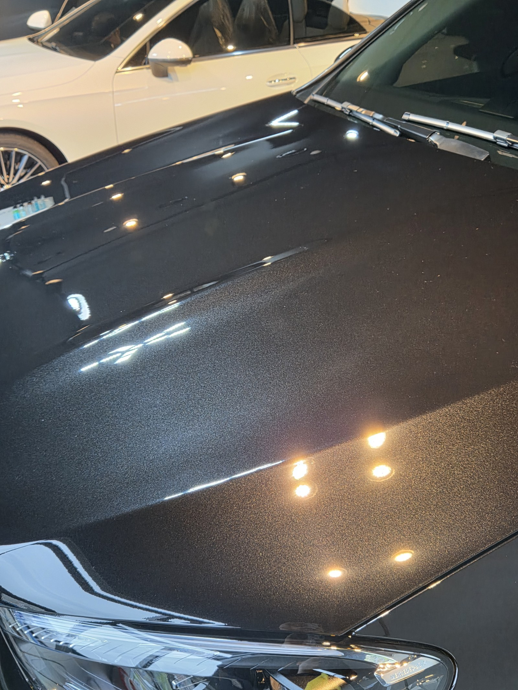
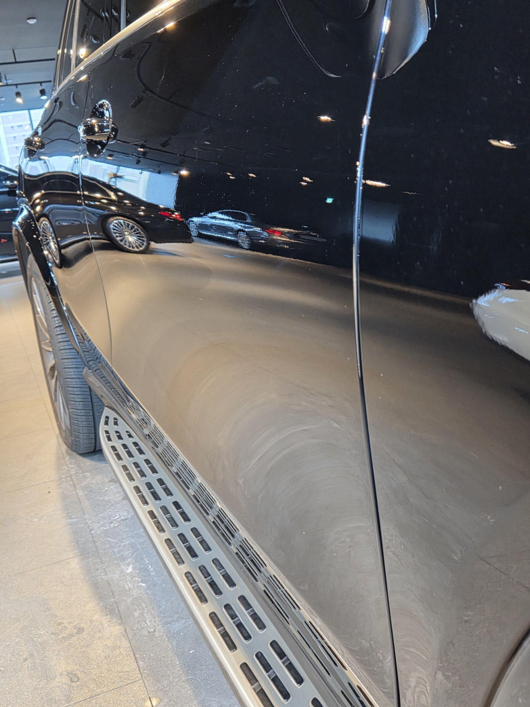
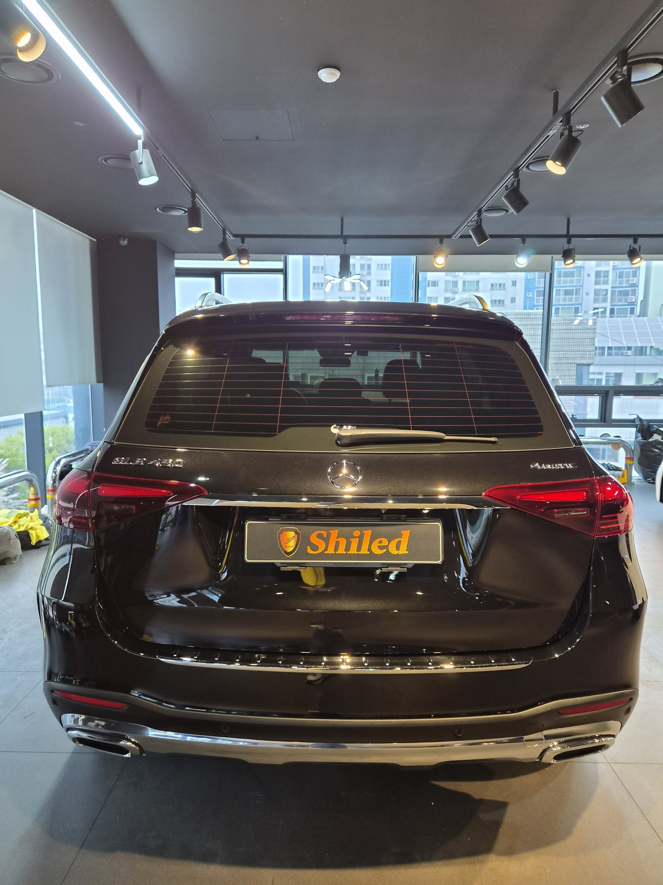
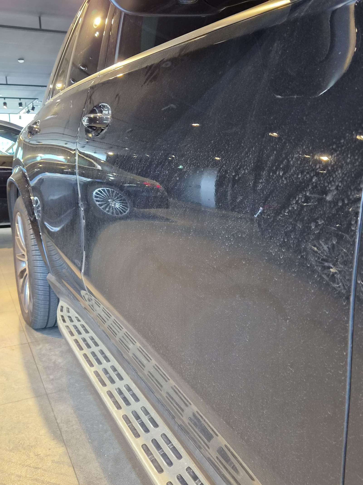
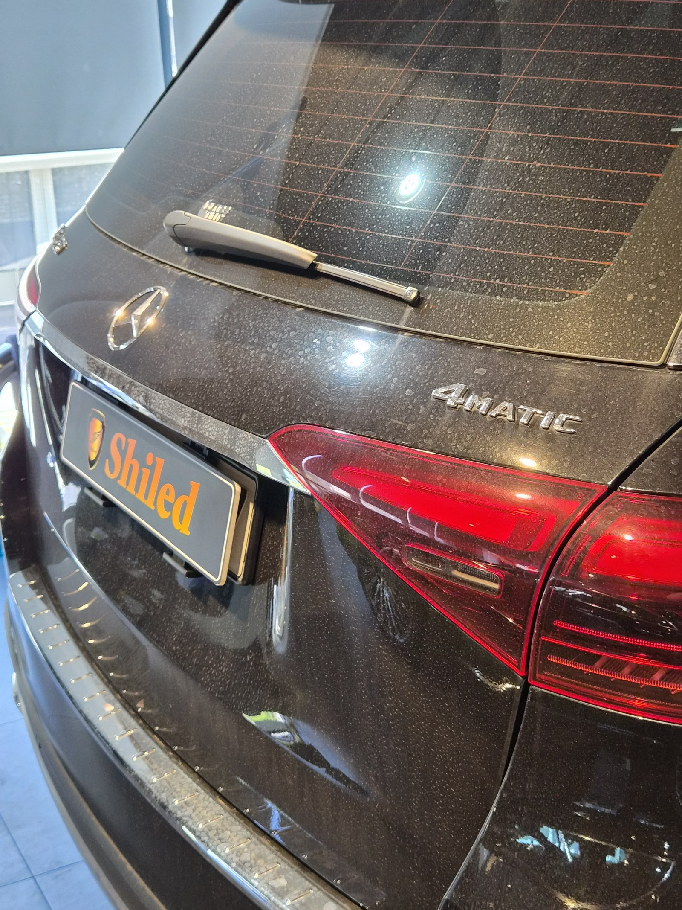
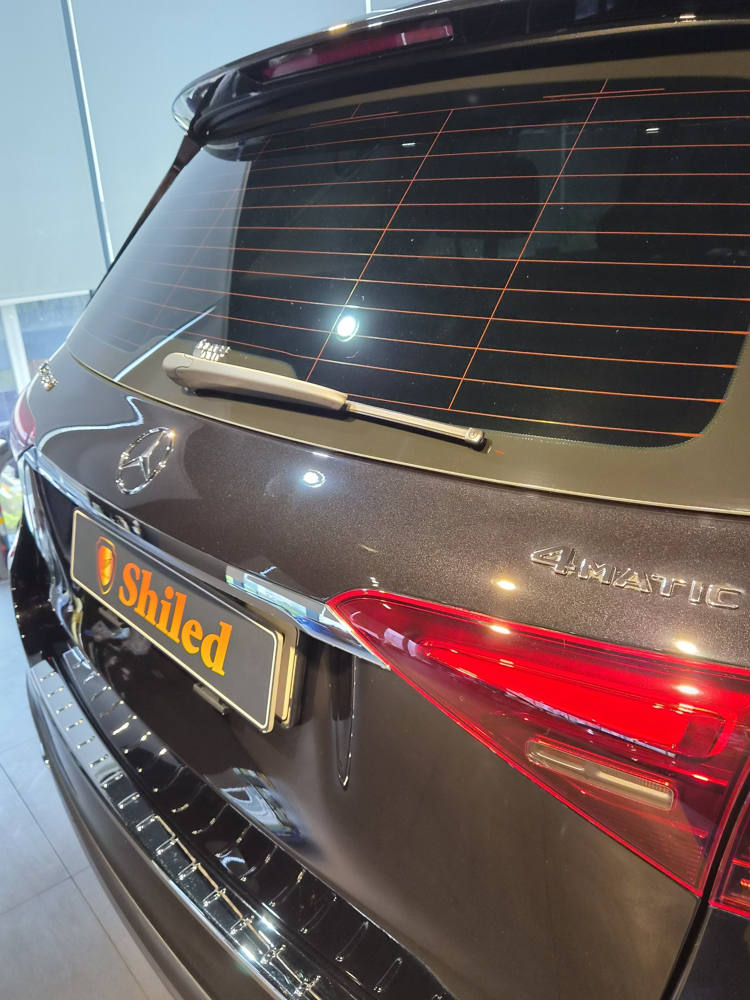

부산 쉴드광택에 들어온 벤츠 GLE450 4MATIC입니다. 검정 메탈릭 바디입니다.
이 차는 큰 패널에 깔린 워터스팟과 거미줄 잔기스를 광택으로 걷어냈습니다.

검정 SUV는 왜 워터스팟이 잘 보이나
검정 메탈릭은 빛을 그대로 반사하는 색입니다. 그래서 관리 흔적이 가장 잘 드러나는 색입니다.
입고 당시 도어와 펜더 위로 물 마른 자국이 점점이 떠 있었습니다. 물기를 제때 닦지 못해 남은 워터스팟과, 세차하며 쌓인 거미줄 잔기스가 섞인 상태였습니다.

큰 SUV는 끝까지 고르게 잡는 게 관건입니다
GLE는 보닛·도어·테일게이트 한 장 한 장이 넓습니다.
면적이 넓을수록 부분마다 광택 정도가 들쭉날쭉해지기 쉽습니다. 같은 퀄리티로 끝까지 고르게 깎으려면 손이 많이 갑니다. 넓어도 한 장처럼 떨어지게 잡는 게 핵심입니다.
기술자의 팁
워터스팟은 표면에 식각된 자국이라 닦아서는 지워지지 않습니다. 표면을 미세하게 깎아내는 광택으로 평탄하게 정리해야 비로소 사라집니다.
광택은 무조건 세게 깎는 게 정답이 아닙니다
자국을 없앤다고 클리어코트(도장면 맨 위 보호막)를 마구 깎으면, 정작 도장 수명을 깎는 일이 됩니다.
그래서 잔기스 깊이를 보고 필요한 만큼만 컴파운드와 패드를 맞춰 깎습니다. 16년간 직접 시공하며 잡아온 감각입니다.
광택 전, 전처리가 9할입니다
좋은 광택도 더러운 바탕 위에서는 의미가 없습니다.
디테일링 세차로 표면 오염을 걷어내고, 철분 제거제로 박힌 쇳가루를 녹여냅니다. 마스킹으로 고무·플라스틱을 보호하고 탈지까지 끝내야 비로소 광택을 올릴 면이 됩니다. 눈에 안 보이는 오염까지 잡는 게 퀄리티의 시작입니다.
마감 후
도어 위로 조명이 한 줄로 또렷하게 맺힙니다.
왜곡 없이 떨어지는 반사가, 광택으로 표면을 평탄하게 잡았다는 증거입니다. 워터스팟의 점들이 사라지고, 검정 특유의 깊은 발색이 살아났습니다.


광택 전후, 같은 자리가 어떻게 달라지나
말로 "잔기스를 걷어냈습니다"라고 하는 것보다, 같은 자리를 전후로 비교하는 게 정확합니다.
아래 사진은 작업 전과 작업 후에 같은 위치를 같은 조명 아래에서 찍은 것입니다.


옆도어 — 점점이 깔려 있던 워터스팟이 정리됐습니다


테일게이트 — 4MATIC 엠블럼 주변 잔기스까지 정리됐습니다
광택 후, 이렇게 관리하세요
광택은 시공으로 끝이 아닙니다. 관리로 수명이 갈립니다.
자동세차(기계세차)는 브러시가 잔기스를 다시 만드니 피하시는 게 좋습니다. 물기는 마르기 전에 닦아 워터스팟을 예방하시고, 손세차 위주로 관리하시면 광택면이 오래 유지됩니다.
자주 묻는 질문
Q. 큰 SUV는 광택이 더 오래 걸리나요?
A. 패널 면적이 넓어 시간이 더 걸립니다. GLE는 보닛·도어·테일게이트가 넓어, 같은 퀄리티로 끝까지 고르게 깎으려면 손이 많이 갑니다. 면적이 넓을수록 들쭉날쭉하지 않게 잡는 게 관건입니다.
Q. 워터스팟은 닦아내면 지워지나요?
A. 초기 자국은 닦이지만, 도장면에 식각된 워터스팟은 닦아도 남습니다. 표면을 미세하게 깎아내는 광택으로 정리해야 사라집니다. 방치할수록 깊게 파고듭니다.
Q. 광택을 하면 도장이 얇아지지 않나요?
A. 필요한 만큼만 깎습니다. 클리어코트 두께를 보고 잔기스 깊이에 맞춰 컴파운드와 패드를 조절합니다. 무조건 세게 깎는 게 정답은 아닙니다.
Q. 광택 후 관리는 어떻게 하나요?
A. 자동세차는 잔기스를 다시 만드니 피하시고, 물기는 마르기 전에 닦아 워터스팟을 예방하십시오. 손세차 위주로 관리하시면 광택면이 오래 유지됩니다.
Q. 쉴드광택 위치와 예약은 어떻게 하나요?
A. 부산 남구 유엔로220 1F 쉴드광택입니다. 예약·상담은 010-3384-1850, 대표 최한중이 직접 상담하고 책임 시공합니다.
큰 차일수록 면적이 넓어 차이가 크게 보입니다.
제품을 직접 만드는 사람이 직접 시공합니다.
부산에서 광택·유리막코팅을 고민 중이시면 편하게 연락 주십시오.
어떤 차를 타냐보다 어떻게 타냐가 중요합니다~!
📞 010-3384-1850 견적 문의쉴드광택 · 부산 남구 유엔로220 1F · 대표 최한중